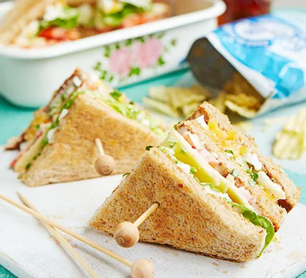

Egg & Cress Club Sandwich

Toasted egg and cress club sandwiches perfect for a day out
Ingredients
- 2 eggs
- 2 tbsp mayonnaise
- 3 slices bread
- a little butter
- 1/3 carton of cress
- 2-3 slices of tomato or a lettuce leaf and a slice of ham or cheese
- crisps,to serve
Steps
- Bring a pan of water to the boil and carefully lower in the eggs. Cook for 6 mins, then cool under running water until they can be peeled. Peel the eggs, then leave to cool completely.
- Mash or chop the eggs, then mix with 1½ tbsp mayonnaise and some seasoning, if you like. Toast the bread.
- Lay one slice of bread on a board. Butter it, then spread on three quarters of the egg and scatter over the cress. Add another slice of toast and gently spread on the remaining mayo. Add the tomato or lettuce and ham or cheese (or whichever combination you prefer). Dot the remaining egg over the top, spread gently, then top with the final piece of toast. Cut the crusts off if you like, then gently cut the sandwich into four quarters, being careful not to squash out the egg. Skewer each sandwich with a sandwich pick. Serve with crisps.